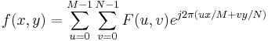

Es handelt sich um einen schnellen Algorithmus für zweidimensionale diskrete Fourier-Transformationen (2D-IDFT), der wie folgt definiert werden kann:

Der Algorithmus für 2D-IFFT ähnelt dem Algorithmus für 2D-FFT darin, das er in eine Serie von 1D-IFFTs heruntergebrochen wird, um die Berechnung zu beschleunigen.
Origin verwendet eine FFTW-Bibliothek, um die Fourier-Transformation durchzuführen.